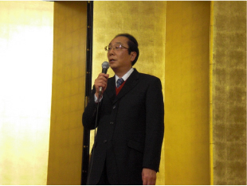

谷口教授 御還暦祝賀会
快晴に恵まれた 10 月 3 (火) 文化の日、リーガロイヤルホテル広島にて谷口教授御還暦祝賀会が開催された。谷口教授は広島大学放射光科学研究センター (HiSOR) の設置を主導し、放射光を用いた固体物性研究の発展と若手研究者の育成に尽力されてきた。また、広島大学副学長として大学運営にも携わり、各方面でご活躍されている。 誠実で温厚なお人柄で人望が厚く、現在までに多くの研究生を指導されてきた。祝宴には研究室から羽ばたいた多くの OB や HiSOR 職員、現役学生が集い、ますますの発展とご健康を願いお祝いした。
